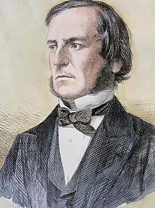

Accueil
Simulation
-Bibliographie-
Bibliographie :
Page wikipédia de George Bool

Page wikipédia de l'algèbre de Boole
Une vidéo très intéressante sur la manière dont les ordinateurs marchent qui aborde le sujet du binaire et donc de l'algèbre de Boole. Source d'inspiration pour la partie simulation du site